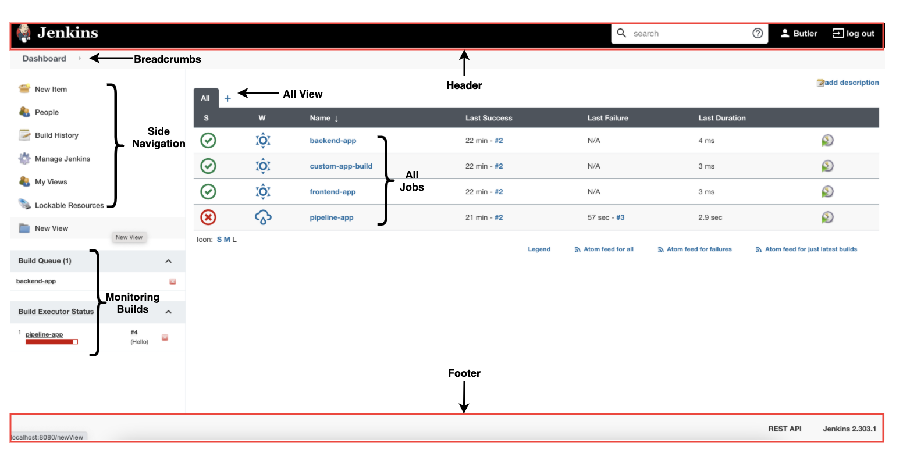

Lab 1
4. Tour of the Dashboard
The dashboard is the Jenkins home page. Here are its main areas:

- Header: the search box, your user name and the log-out link.
- Breadcrumbs: show where you are, for example Dashboard › my-job › #3. Click to go back.
- Side navigation: New Item (create a job), People, Build History, Manage Jenkins (settings, plugins, security), My Views. Some entries, such as Lockable Resources, come from plugins.
- Views: tabs that group jobs. The All view shows every job; click + to create a new view.
- Jobs list: for each job, S is the status of the last build (green tick = success, red cross = failure), W is the "weather" of recent builds (sun = healthy, storm = failing often), then the last success, last failure and last duration.
- Build Queue: builds waiting to start.
- Build Executor Status: builds currently running, and on which executor.
- Footer: the REST API link and your Jenkins version.